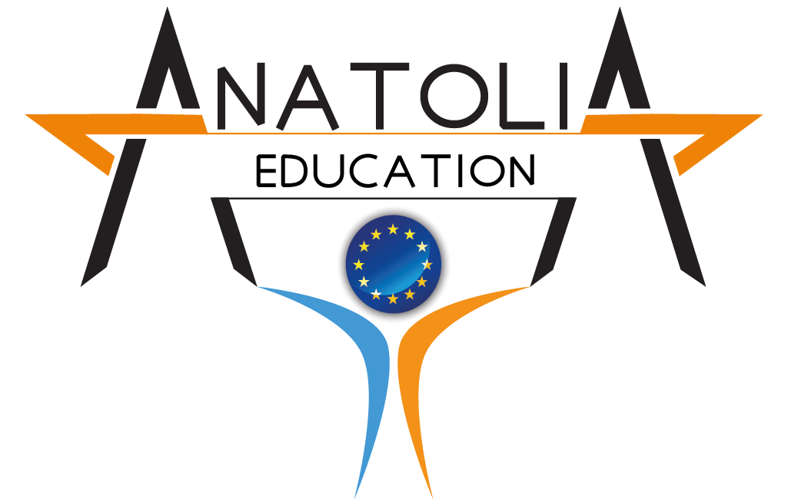

INFO
Dla wielu uczniów Zespołu Szkół Elektronicznych w Rzeszowie praktyki zawodowe to jedna z najważniejszych form kształcenia. Dlatego też z ogromnym zainteresowaniem przyjęliśmy propozycję wyjazdu na Cypr, gdzie mieliśmy okazję zdobywać doświadczenie w różnych firmach i instytucjach związanych z dziedziną informatyki, elektroniki czy też fotografii. Podczas praktyk uczniowie mieli także okazję doskonalić swoje umiejętności językowe, ponieważ praca w międzynarodowym środowisku wymagała od nich komunikacji w języku angielskim.
uczniowie doskonalili swoje umiejętności w dziedzinach :
- informatyki
- elektroniki
- florystyki
- fotografii
Podczas praktyk uczniowie mieli okazję poznać realia pracy w branży informatycznej i elektronicznej. Zajmowali się projektowaniem systemów, programowaniem aplikacji, a także instalowaniem i konfigurowaniem sprzętu komputerowego. Uczniowie mieli także okazję pracować z najnowszymi technologiami, takimi jak Internet Rzeczy (IoT) czy sztuczna inteligencja (AI).
UCZESTNICY

Klemens Zając
Technik Włamywacz
Szkoła robienia chałasu
PRAKTYKI W
IFLY

Adam Królik
Technik Zmywacz
Szkoła robienia burdu
PRAKTYKI W
lorem
Piotr Pies
Technik .
Lorem, ipsum.
PRAKTYKI W
lorem
Barbara Nowak
Technik zmywacz
Szkoła niższa
PRAKTYKI W
lorem
Paweł Gawrzyn
Lorem, ipsum.
Szkoła lorem
PRAKTYKI W
lorem
PRZEBIEG
Podróż

Praktyki rozpoczęły się w dniu 21.03.2022r. lecz uczniowie już w nocy, dokładnie o 1:30 dnia 20.03.2022 wyjechali w kierunku lotniska Kraków – Balice. Podróż miała początek na dworcu PKS w Rzeszowie, Neobusem pojechaliśmy do Krakowa, tam dobraliśmy pasażerów, a część jadących z Rzeszowa wysiadła. Kolejnym przystankiem było lotnisko, tam wysiedliśmy z grupą i Panią Marią Materną na czele, odebraliśmy nasze bagaże. Udaliśmy się na halę lotniska i tam oczekiwaliśmy na odprawę, odprawiliśmy się, przeszliśmy przez kontrolę bezpieczeństwa, a następnie udaliśmy się na pokład samolotu linii Lufthansa w kierunku Monachium, gdzie mieliśmy mieć przesiadkę. Lot przebiegł spokojnie i bez żadnych komplikacji. W Monachium mieliśmy około godziny czasu od przylotu do wylotu kolejnym samolotem. Kolejny lot również przebiegł pomyślnie i wylądowaliśmy w Bilbao. Podczas obu lotów dostaliśmy czekoladkę z logiem Lufthansy i butelkę wody mineralnej.
Bilbao

Po przylocie do naszego miasta praktyk i odbiorze bagaży, czekała na nas Pani kierująca autobusem, z karteczką “POLAND, EDU IT”, spakowaliśmy nasze walizki do bagażnika i ruszyliśmy w drogę. Bilbao przywitało nas pięknymi widokami i słoneczną pogodą. Po kilkunastu minutach dojechaliśmy do Micampusu, w którym mieliśmy zarezerwowany nocleg na najbliższe trzy tygodnie. zostaliśmy rozdzieleni do pokoi, otrzymaliśmy karty umożliwiające dostęp do nich i udaliśmy się tam ze swoimi bagażami. Pokoje zrobiły na nas bardzo pozytywne wrażenie: czysto, dostęp do najpotrzebniejszych rzeczy, kuchnia, łazienka, sypialnia, biuro, wszystko w jednym. Przestrzeń była urządzona w sposób przemyślany i praktyczny. Rozpakowaliśmy się i mieliśmy resztę niedzieli dla siebie. Udaliśmy się na wycieczkę, aby zwiedzić miasto, które stało się naszym domem na czas praktyk. Miasto zaskoczyło nas piękną architekturą, zagospodarowaniem przestrzeni i ilością schodów. Tak, Bilbao można podsumować stwierdzeniem, że jest to miasto schodów. nie wiele jest miejsc gdzie jest płasko, chociaż takie też da się uświadczyć.
Praca

W poniedziałek nadeszła pora na pracę, w końcu to jest nasz główny cel wyjazdu – rozwijać się w swoich zawodach. Andrea i Oihane przyszły pod Micampus, dostaliśmy karty z pieniędzmi na metro, aby móc dojeżdżać do pracy. Następnie po podzieleniu na grupy udaliśmy się na prezentację firm. Gabriela Teprag, Patrycja Piś oraz Patryk Babiarz udali się do firmy Escuela Construcción Bizkaia, aby tam rozwijać swoje budowlane umiejętności. Karolina Kapustyńska wraz z Jakubem Wawruchem rozpoczęli praktyki w firmie Crazy Ones, gdzie mogą realizować fotograficzne wizje. Aneta Kutyła oraz Miłosz Gwizdak spełniają się w firmie Ibaiondo Centro de Formación Profesional jako technicy informatycy. W informatycznym zawodzie pracują również Julia Mac, Wojciech Uchman i Mateusz Wacnik w firmie Calasanz Santurtzi. Wszyscy znaleźli zatrudnienie w firmach odpowiadających ich kierunkom kształcenia i mogą rozwijać swoje umiejętności w praktyce.
Czas wolny

Po pracy mieliśmy kilka godzin dla siebie, w tym czasie często udawaliśmy się na spacery, aby zwiedzać miasto, a także, przede wszystkim, aby rozmawiać, poznawać się i integrować w grupie. Poza tymi małymi wycieczkami były również większe wyjazdy, które odbywały się w weekendy. Pierwszą wolną sobotę praktyk spędziliśmy na zwiedzaniu pięknego miasta na wybrzeżu, jakim jest San Sebastian. Pojechaliśmy tam pociągiem, na który mogliśmy wsiąść ze stacji nieopodal miejsca naszego zakwaterowania. Podróż trwała około 2,5 godziny, ale było warto, plaża, morze, wzniesienia, piękna pogoda, wszystko to składa się na niezapomniane wspomnienia. Kolejną wolną sobotę spędziliśmy zwiedzając położone w Bilbao, muzeum Guggenheima, a w nim wystawy poświęcone motoryzacji, nowym technologiom, sztuce współczesnej, a także industrialną instalację stalowych labiryntów.
ORGANIZATORZY
Anatolia Eğitim ve Danışmanlık
DUMLUPINAR MAH. OSMAN ATTILA CAD. No:4 /1 – D:6 MERKEZ / AFYONKARAHISAR strona firmowa
EDU-IT AUGUSTYN, PIEPRZYCKI SP.J.
ul. Hetmańska 62/3, 35-078 Rzeszów strona firmowa